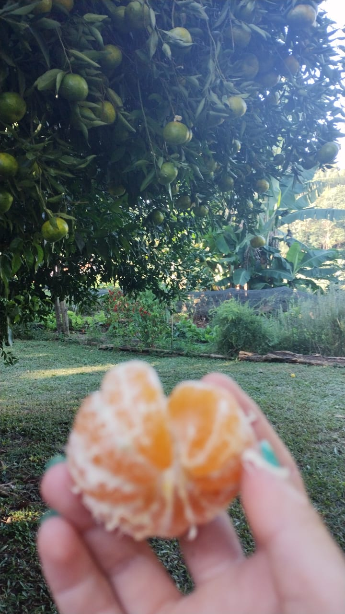
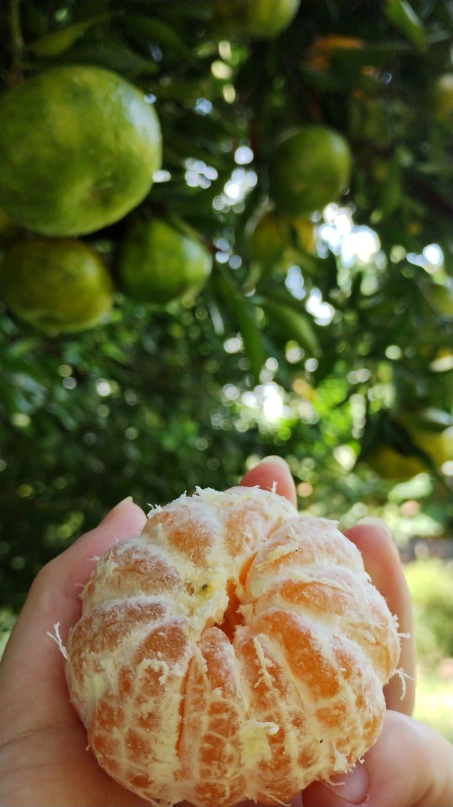

Frutas da nossa terra
Vergamotas no Paraná O Paraná é conhecido pela grande diversidade de vergamotas, também chamadas de tangerinas ou mexericas. Essas frutas cítricas são doces, fáceis de descascar e ricas em vitamina C. Entre as variedades cultivadas estão a Ponkan,Montenegrina,Murcott e Caí. Elas se adaptam bem ao clima do estado e fazem parte da agricultura familiar, sendo consumidas in natura ou usadas em sucos, doces e geleias. A vergamota é símbolo da cultura e da produção agrícola paranaense. .
 